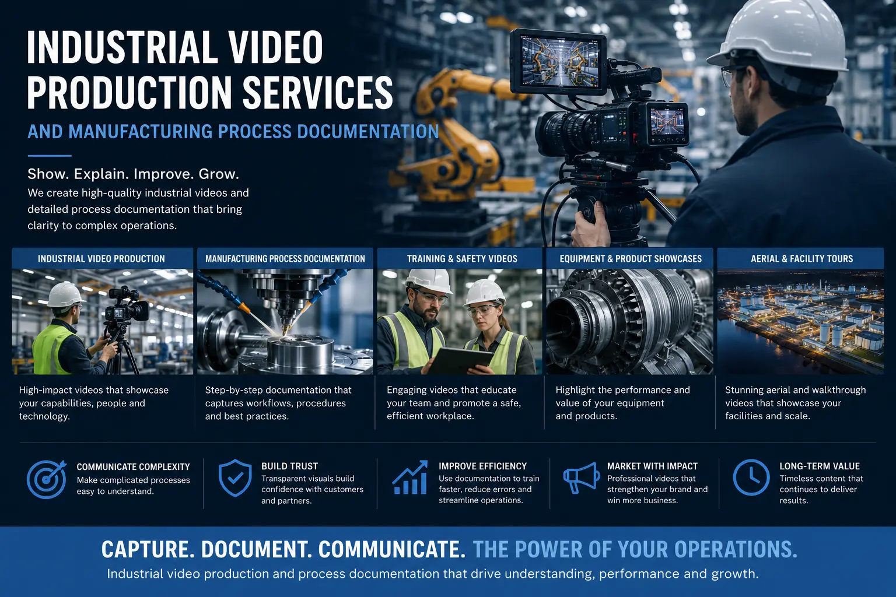
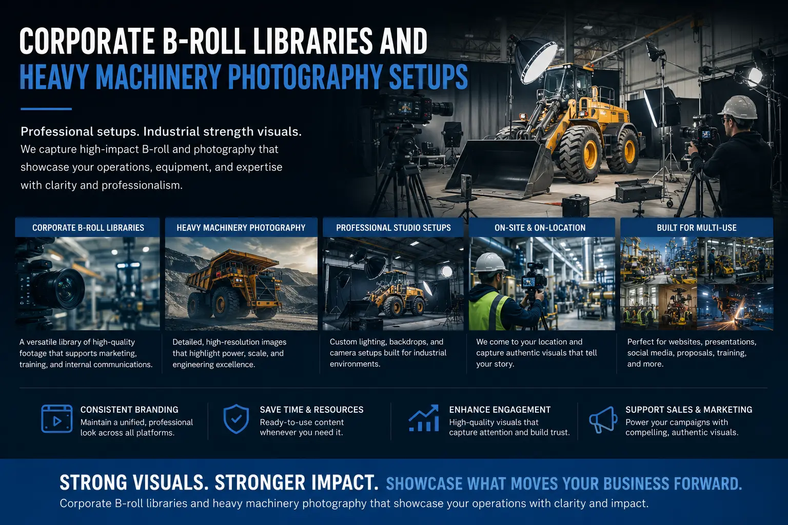

How Industrial B-Roll Libraries Transform Complex Manufacturing into Premium Brand Visuals
From Grit to Grandeur: The Value of Industrial Videography
Manufacturing facilities are often viewed as noisy, gritty, and utilitarian spaces focused entirely on production volume. However, behind the industrial facade lies a complex dance of precision engineering, advanced robotics, and skilled craftsmanship. For modern B2B buyers, supply chain partners, and investors, these operational details are a key indicator of product quality.
Historically, industrial companies have struggled to showcase their capabilities, often relying on outdated photos or generic stock footage that fails to capture their actual scale. Forward-thinking manufacturers are now investing in **Industrial Video Production Services** to build custom asset libraries. By capturing real operations on film, companies can translate complex processes into premium brand visuals.
Through disciplined **Manufacturing Process Documentation** and the creation of structured **Corporate B-Roll Libraries**, industrial brands can build trust, showcase scale, and create compelling marketing materials that attract global clients.
Building the Library: Capturing the Factory Floor
Capturing high-end visuals in challenging industrial environments requires specialized equipment and creative techniques.
- Finding a professional factory video shoot near me. When planning a shoot, look for local production specialists who understand industrial environments. Searching for a **Factory video shoot near me** helps you locate crews equipped with safety gear, stabilized rigs, and high-powered lighting capable of handling large facility setups.
- Cinematic commercial engineering videography. High-end **commercial engineering videography** focuses on visual geometry, scale, and detail. Crews use motorized sliders, drone tracking, and slow-motion capture (60fps to 120fps) to turn heavy machinery movements into smooth, mesmerizing patterns that hold viewer attention.
- High-contrast heavy machinery photography. Capturing the power of machinery requires precise lighting. Professional **heavy machinery photography** uses portable LED fixtures to separate machines from dark background structures, highlighting polished metal edges and micro-details.
- Showcasing manufacturing scale and facility footprint. Showing physical capacity requires wide-angle lenses and drone footage. By **showcasing manufacturing scale** from above, you demonstrate your capacity to handle large orders, giving international partners confidence in your supply chain stability.
Build Client Confidence
Real facility footage validates your manufacturing claims. Showing actual machinery and safety protocols builds immediate trust with B2B buyers looking for reliable partners.
Save Production Costs
Building a custom B-roll library gives you a repository of assets. This library can be sliced and reused for social updates, site headers, and presentations without hiring a new crew.
Improve Sales Materials
Integrating professional factory loops into sales decks helps B2B reps show operational capacity during pitches, shortening sales cycles and boosting close rates.
Attract Premium Talent
Showing a clean, safe, and technologically advanced factory environment helps recruit top-tier engineers and operators, boosting your employer brand.

The Storytelling Framework: Detailing the Supply Chain
A manufacturing video should do more than show spinning gears; it must tell a cohesive story of quality control, safety, and innovation.
- Documenting material sourcing. Start your visual narrative where the product begins—with the inspection of raw materials. Documenting the check of metal alloys, premium fabrics, or raw polymers establishes your quality standards from the first frame.
- Visualizing precision craftsmanship. Highlight the human element by focusing on the engineers, technicians, and artisans. Capture close-up details of manual adjustments, quality testing, and hand assembly to showcase the human care behind every product.
- Supply chain storytelling and quality control labs. Show your testing facilities, clean rooms, and quality control steps. Cinematic **supply chain storytelling** that highlights pressure tests, laser measurements, and packaging steps proves your commitment to delivering defect-free goods.
- Creating polished corporate identity films. Combine B-roll, executive interviews, and customer case studies to build **corporate identity films**. These films present your history, technological investments, and company culture, positioning your business as a market leader.
Managing the Asset Library: Categorization and Repurposing
An industrial footage library is only useful if your marketing and sales teams can easily access and deploy the assets.
Footage Categorization
- Organize your B-roll library into clear folders: Raw Materials, Automated Robotics, QC Lab, Assembly, and Logistics.
- Tag files with metadata (e.g., machine name, process type) to help editors find clips quickly.
- Save files in edit-ready, high-resolution formats alongside compressed preview clips.
Multi-Channel Deployment
- Use short, looping clips as website background headers on your capability pages.
- Integrate factory details into B2B sales decks and virtual tour pages.
- Slice machinery sequences into engaging vertical clips for LinkedIn updates and industry campaigns.
Asset Refresh Cycles
- Schedule bi-annual or annual updates to document new machinery and facility upgrades.
- Retire footage showing decommissioned gear or outdated safety processes.
- Keep your visual library aligned with your actual operational capacity.
Integrating Video into B2B Sales Cycles
To maximize the ROI of your video library, integrate these visual assets directly into your sales process.
- Virtual facility tours. Build interactive walkthrough pages where global buyers can click on a map of your factory and watch B-roll clips of each station, offering a virtual site visit.
- Video-supported RFPs. Attach links to relevant process B-roll clips in your request-for-proposal (RFP) submissions, visually demonstrating your technical capacity to deliver the project.
- LinkedIn leadership updates. Share short behind-the-scenes clips of your manufacturing processes on LinkedIn, keeping your brand visible to procurement officers and supply chain directors.

Conclusion
Industrial B-roll libraries are an essential asset for manufacturers ready to compete globally. By using **Industrial Video Production Services** to capture the reality of your factory floor, you transform gritty operations into premium visual proof of your brand's capabilities.
Through disciplined **Manufacturing Process Documentation**, custom **Corporate B-Roll Libraries**, and cinematic storytelling, you can showcase your scale and build trust with international clients.
At The PhD Ads in Madurai, we specialize in high-end industrial videography, help brands build custom B-roll libraries, and produce **corporate identity films** that elevate manufacturing businesses.
Key Topics
Showcase Your Manufacturing Excellence
Ready to document your factory floor and build a custom corporate B-roll library? At The PhD Ads in Madurai, we provide industrial videography services that highlight your machinery, scale, and craftsmanship.
Email: team@e2o.in